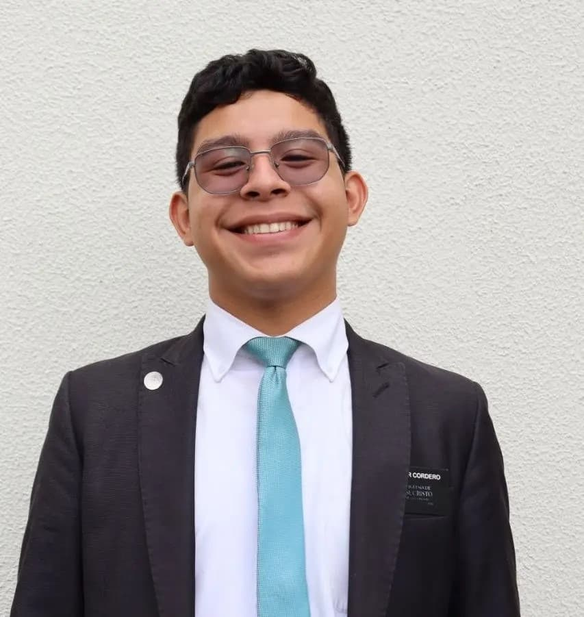

WDD 130 | Diego Cordero

Hi everyone! My name is Diego Alejandro Cordero Galindo. I'm from Ciudad Bolivar, Venezuela and I am a BYU-Pathway Student. I'm pursuing a Bachelor's Degree in Software Engineering, and I'm so excited for all the new abilities that I'm learning in my courses!
I served in the Venezuela Maracaibo Mission (2023-2026) and returned home recently. I love serving at the church. Currently, I serve as the Stake Clerk for my Stake Presidency. In my free time, I love watching movies and series and play videogames in my phone.